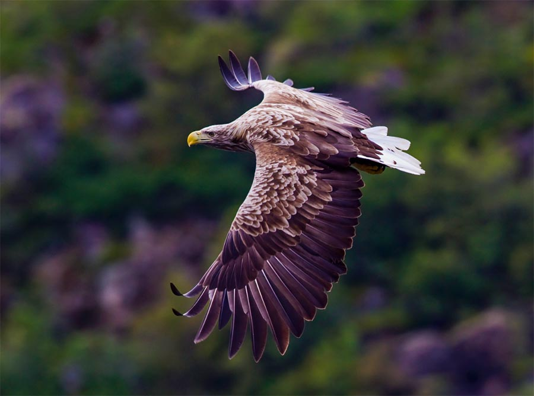

Información
Nombre científico
Haliaeetus albicilla
Extinción en Murcia
siglo XIX
Envergadura
2 - 2.45 m
Peso
4 – 7 kg
Descripción
Se trata del águila más grande del continente. En la actualidad nidifica en el norte de Eurasia, pero existen evidencias de cría en Argelia y Egipto hasta el siglo XIX. La mayor población en Europa se encuentra a lo largo de la costa de Noruega.
En 2021 comenzó un proyecto para reintroducirla en el norte peninsular con ejemplares noruegos, comenzando a reproducirse en 2025.